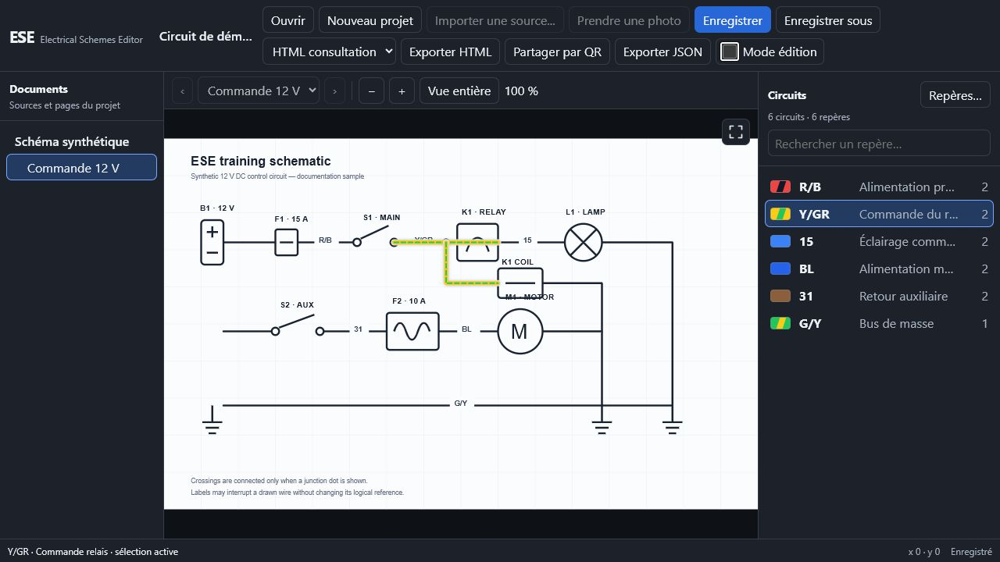
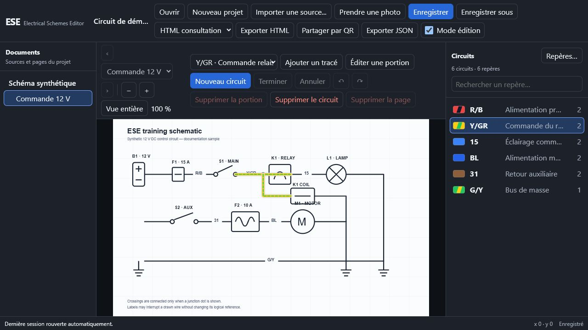
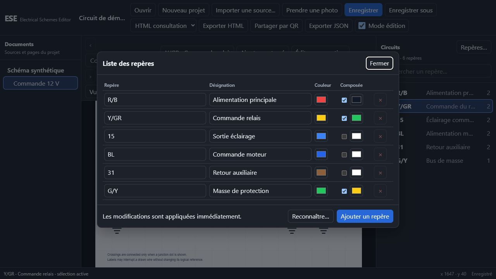
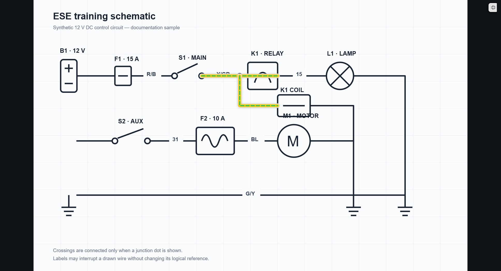

Import polyvalent
Images, photos prises directement par l’appareil et pages choisies dans un PDF.
ESE · 0.1.0-beta.2
Importez un plan ou un document, dessinez ses circuits, puis explorez-les au survol ou au clic. ESE produit des projets ouverts et des fichiers HTML autonomes, lisibles sans installer l’application.

Pourquoi ESE ?
Sur un câblage dense, colorer tout en permanence masque précisément ce que l’on cherche. ESE conserve le document original intact et superpose des tracés interactifs : survol temporaire, sélection persistante, repères couleur ou numériques, et continuités dessinées avec précision.
Fonctionnalités
Images, photos prises directement par l’appareil et pages choisies dans un PDF.
Créez, prolongez, modifiez ou supprimez chaque portion sans perdre le reste du circuit.
Couleurs simples, composées, abréviations et numéros : ESE s’adapte à la convention du plan.
Analysez une légende ou une zone du document pour proposer automatiquement des repères à valider.
Zoom, déplacement à deux doigts, mémorisation de la vue par page et mode plein écran.
Exportez un lecteur consultable dans un navigateur, avec ou sans outils d’édition.
Transférez l’export HTML entre appareils sur le réseau local, sans serveur distant.
Rouvrez le dernier projet au démarrage et récupérez une copie privée après un arrêt imprévu.
Téléchargements
Première bêta capable de se mettre à jour directement depuis ESE. Choisissez l’édition correspondant à votre appareil.
Installation classique dans votre profil utilisateur, avec raccourcis et désinstallation propre.
Télécharger l’installateurUn exécutable unique : copiez-le où vous voulez et lancez-le sans installation.
Télécharger le portableUne APK signée réunissant ARM 32/64 bits et x86 32/64 bits, à installer directement.
Télécharger l’APKPaquet autonome pour Linux x64. Cette édition reste expérimentale pendant sa validation sur davantage de distributions physiques.
Télécharger l’AppImageCes éditions sont prévues, mais nécessitent encore une chaîne de compilation et des appareils Apple pour être construites, signées et testées correctement.
Tutoriel
Cliquez sur « Nouveau projet ». Si le document courant a changé, ESE vous propose d’abord de l’enregistrer.

Activez le mode éditeur, puis importez une image, prenez une photo ou sélectionnez une ou plusieurs pages physiques d’un PDF. ESE ne conserve dans le projet que les images rendues, pas le document source complet.
Ajoutez un nom, un numéro ou une abréviation, puis associez-lui une couleur simple ou composée. L’OCR peut proposer une première liste à valider.
Choisissez un repère et posez les points sur le fil. Un double clic termine la portion et permet immédiatement d’en ajouter une autre au même circuit.
Sélectionnez une portion existante pour déplacer ses points, l’étendre ou la supprimer. Un croisement n’est continu que si le schéma montre explicitement une jonction.
Le fichier .ese est une archive ZIP ouverte contenant les pages rendues, les tracés et l’état de navigation. Il s’ouvre de la même manière sur chaque plateforme.
Désactivez le mode éditeur. Le survol éclaire temporairement un circuit ; un clic le verrouille, et un second clic sur le même circuit le désactive. Le plein écran ne conserve que le schéma et son bouton de sortie.

Choisissez HTML consultation pour éviter les fausses manipulations, ou HTML éditable pour garder les outils. Enregistrez localement ou partagez par QR sur le réseau local : le destinataire n’a besoin que de son navigateur.

Ouvert par conception
ESE n’invente pas un conteneur opaque. Un projet .ese est une archive ZIP documentée. L’échange JSON expose les repères, circuits, tracés, pages et vues. L’export HTML rassemble le lecteur et les données dans un fichier autonome.
ESE est développé publiquement par Nibin Naug et distribué sous licence GNU GPL v3 ou ultérieure. Consultez le code, signalez un problème ou contribuez à la suite.
Voir le projet sur GitHub